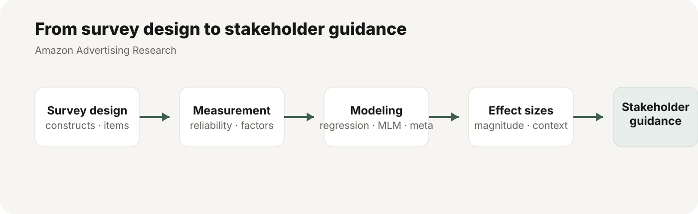

Amazon Advertising Research
A paid consulting engagement spanning survey design, measurement, quantitative analysis, and stakeholder interpretation. The work focused on identifying which creative and brand attributes were most strongly associated with advertising outcomes while keeping the analytical conclusions appropriately calibrated.

Context
The research team wanted to understand which ad attributes were related to ad liking, purchase intent, and downstream brand perceptions. The work also required decisions about how to measure constructs well, how to handle repeated ratings and competing predictors, and how to communicate effect sizes without overstating what the data could support.
My role
- Reviewed draft surveys and recommended improvements to construct measurement, item selection, and response-quality checks.
- Advised on data structure, multicollinearity, model choice, and analysis strategy.
- Took over quantitative analysis and produced plots, written interpretations, and stakeholder-ready explanations.
- Returned for follow-up consultation on scale development and brand-personality measurement.
Research design & measurement advice
- Recommended evaluating factor structure before collapsing items into composite scores.
- Suggested attention-check items and safeguards against inattentive or low-quality responding.
- Flagged issues created by small higher-level sample sizes and repeated/cross-nested rating structures.
- Advised on established versus ad hoc measures when the goal was to interpret latent constructs such as identification, trustworthiness, and brand perceptions.
Analytical approach
- Ran creative-level regressions and pooled estimates using random-effects meta-analysis.
- Used multilevel models to account for ratings clustered within ads and to estimate each predictor's unique contribution.
- Compared bivariate and multivariate results instead of treating statistical significance as the main decision rule.
- Examined factor structure and scale reliability before constructing composite outcomes.
How I helped stakeholders interpret the findings
I advised stakeholders to prioritize the magnitude and consistency of effects rather than focusing only on p-values. I explained why a variable can show a strong bivariate relationship but become weak after controlling for related predictors, and why that difference matters when deciding which ad attributes appear independently informative.
Effect-size guidance
When stakeholders asked how to interpret the size of effects, I recommended using effect-size benchmarks cautiously and in context rather than treating conventional cutoffs as universal rules. I also discouraged top-two-box dichotomization because reducing continuous measures to categories can throw away information and distort comparisons.
Research judgment
The project required more than choosing a model. I regularly clarified what could and could not be concluded from observational survey data, including the limits of causal interpretation and the difference between statistical detectability and practical importance.
What changed because of the analysis
The discussion moved from “which variables are significant?” toward a more defensible set of questions: Which effects are large enough to matter? Which predictors remain informative after controlling for overlap? Which findings are robust across creatives? And how confident should stakeholders be in those conclusions?